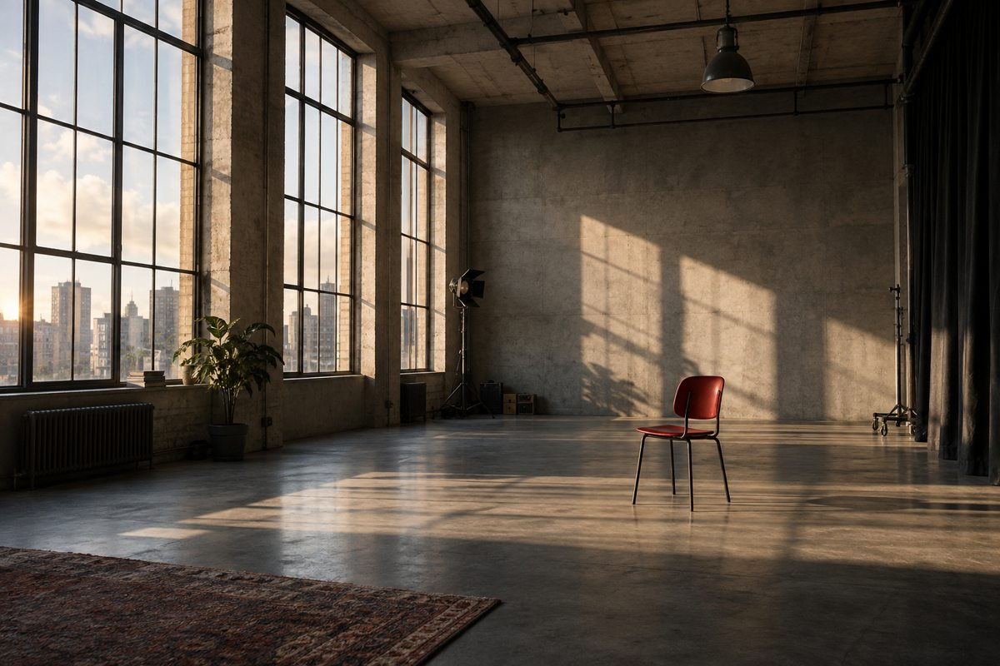

Проекты и команда
Опишите историю, укажите сроки и открытые роли. Пригласите специалистов, чьи работы вам близки.
Найти проект ↗ПЛАТФОРМА ДЛЯ СЪЁМОЧНЫХ КОМАНД
Найдите людей, которые увидят ваш замысел. Соберите команду и пройдите вместе путь от идеи к первому кадру.
Короткий метр / клип / документальное кино

01 / О ПРОЕКТЕ
Хорошая идея не должна оставаться в заметках только потому, что рядом нет оператора, актёра или продюсера.
StoryCrew соединяет людей, которые хотят снимать. Здесь можно рассказать о проекте, найти специалистов и организовать работу команды в одном пространстве.
Посмотреть проекты ↗02 / ВОЗМОЖНОСТИ
Опишите историю, укажите сроки и открытые роли. Пригласите специалистов, чьи работы вам близки.
Найти проект ↗Покажите свои работы или найдите героя для фильма. Соберите отклики и самопробы в одном разделе.
Открыть кастинг ↗Распределите задачи, согласуйте календарь и бюджет. Обсуждайте подготовку в чате проекта.
Заглянуть в проект ↗03 / ПЕРВЫЕ ШАГИ
Укажите профессию, навыки и добавьте портфолио. Дайте будущей команде увидеть ваш подход.
Создайте проект или откликнитесь на роль. Обсудите условия и договоритесь о совместной работе.
Соберите задачи, даты и материалы. Теперь у вашей идеи есть не только план, но и команда.
04 / РАБОЧЕЕ ПРОСТРАНСТВО
Команда, роли, календарь и бюджет — у каждого дела своё место. Нужные разделы всегда рядом.

Главная страница StoryCrew
05 / СВОИ ЛЮДИ
Для первой студенческой работы и следующего независимого проекта. Важны ваша идея, опыт и желание создавать вместе.
Собрать состав и организовать производство.
Найти роль, команду и интересную задачу.
Начать с небольшого проекта и найти единомышленников.
06 / ПЕРЕД СТАРТОМ
Да. Можно оформить учебный проект, показать первые работы и найти участников с похожими интересами. В описании сразу укажите свой опыт и условия участия.
Да. Откройте каталог специалистов, посмотрите портфолио и перейдите к обсуждению проекта.
Да. Для телефона подготовлен отдельный интерфейс с основными разделами. Открыть мобильную версию ↗
Учебный интерактивный макет StoryCrew. Он показывает экраны и переходы. Реальная регистрация, платежи и обмен сообщениями через сервер пока не подключены.
ВАШ ПЕРВЫЙ КАДР